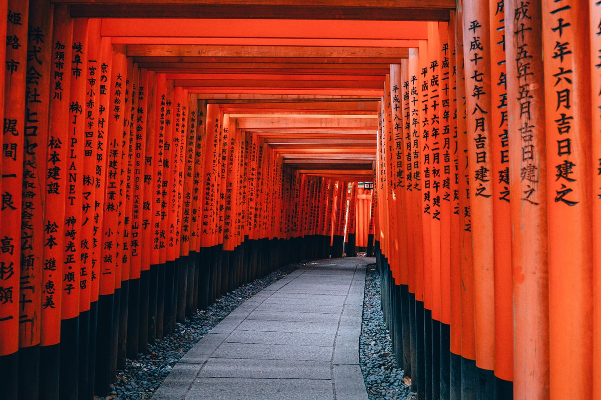

Japanese Shrines
Summary
Find out more about Japanese shrines that can be found all over Japan which bring good fortune to those who pray at them!
Full Text
Japanese shrines known as "Shinto shrines" are shrines that Japanese people often pray at and are said to bring good fortune to those who do. You pray by dropping a coin at the shrine, ring the bell, clap your hands and make a wish.
There are also usually amulets sold at the shrines called "Omamori" which are also a sign of good fortune that you would carry with you. There are different kinds of amulets like Romance fortune, in that case you would buy an amulet for your loved ones to bring good fortune to your relationship.
Each shrine hosts a "kami" which is a god, in Japan there are lots of different kami's that people pray for example. Ta-No-Kami which is the deity of harvest and farmers would usually pray to that god for good harvest from their fields.
People leave offerings such as food and clothing because they believe the deity will be pleased with their gifts and will continue to watch over them forever. If you ever visit Japan I would highly recommend visiting a shrine,
they are open for public and visiting and praying at one is so peaceful and feels new to actually pray for good fortune and hope that it comes true.
Author: Kevin Films
Date: 15/09/2020